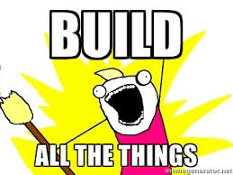
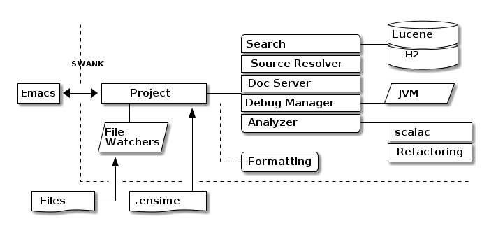
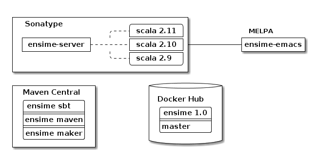
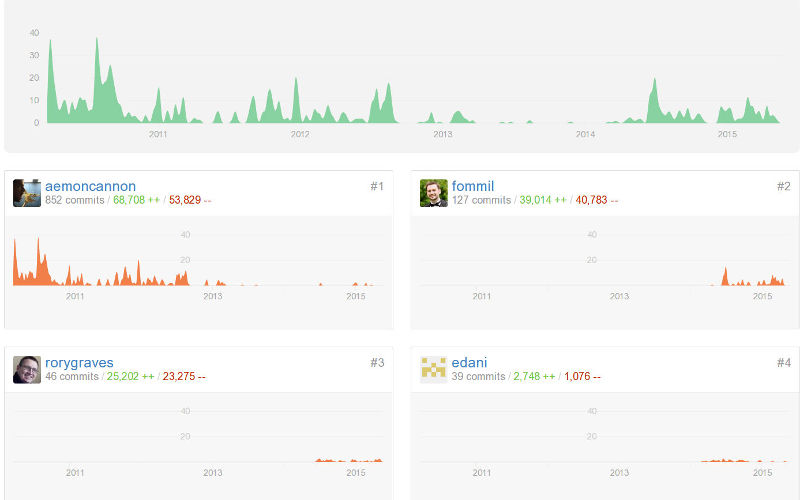
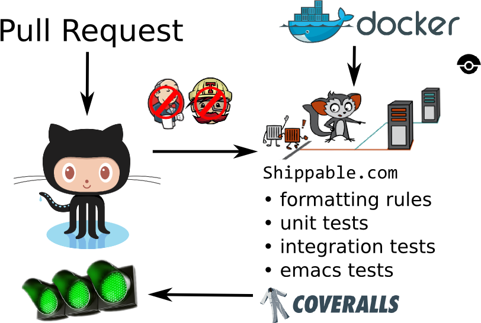
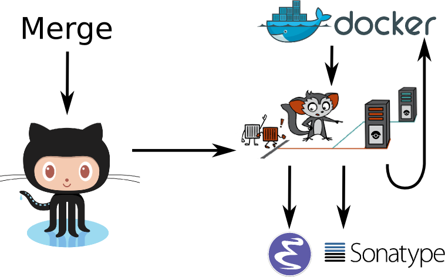
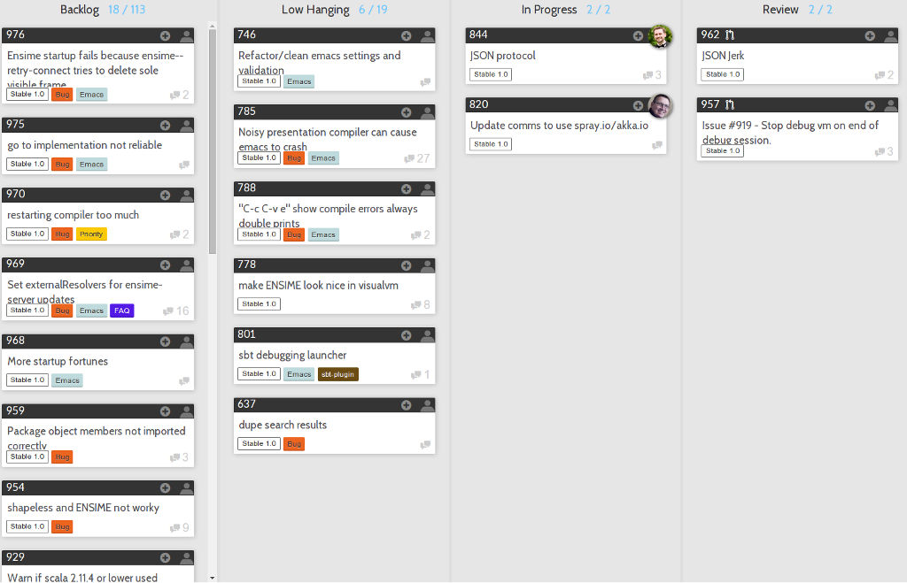

Straw poll -
@a_dev_musingRory was writing mobile games when Nokia Snake was the height of technology, long before it was cool.
He was doing novel research on dynamic network protocols to replace TCP/IP, which was when a cluster was more likely to refer to a collection of peanuts than a collection of server computers.
He shows people around an old windmill in southern England at the weekends.
And he is a black belt in a martial art that I cannot pronounce, with the superpower of sword fighting.
So believe me, you really don’t want to be waiting on your compiler with Rory around!
@fommilnetlib-java underpinning Apache Spark
FreeHighSchoolScienceTexts No Evidence he ever got back from the Mun

It is time to build our own IDE!
End with ‘Demo Time!’
(set-frame-font “Inconsolata-24”) (required ’command-log-mode t) (global-command-log-mode) (setq guide-key/guide-key-sequence nil)
sleep 2 ; recordmydesktop –no-sound –on-the-fly-encoding –no-frame -o ensime.ogv
Rough script, for a walkthrough:
scala-mode2 and show regex syntax highlighting.ensime and comment on the sbt deploy process.
This is an architectural overview of the internals of the ensime-server, which is bounded here by the dotted lines.
The text editor communicates with the server via SWANK, which is a bidirectional TCP/IP sockets protocol using S-Expressions as the language. This is really convenient for emacs. We’ll talk about protocols later because we really don’t see ENSIME as being an emacs only library.
The server runs locally, so it also has direct access to the files on the disc and can watch for changes without needing to be told about them. This is typically used for detecting changes in the compiled files rather than looking for changes in source code.
And when the server is started, it needs to be given a .ensime file which defines the project layout. This is typically generated by the build tool.
Inside the server, everything goes via the central Project class which effectively just delegates to the relevant sub-component. The two big parts are the Search Service and the Analyzer:
We’ve had various discussions about where the “in/out” line should be and we decided that compilation is definitely on the other side of the line because that’s what build tools are designed to do. But with the possibility of closer integration with the new sbt server, we will see the coupling with sbt, in particular, becoming stronger. But we’re not limiting ourselves to one build tool because the reality is that a large number of corporate development environments are using legacy build systems and we want to support that.

ENSIME isn’t just one project. The server is a Scala project with separate branches to support the three active stable release versions of Scala. (Yes, people are still using Scala 2.9 in production systems).
The compiler API has been quite volatile across versions, so we are not able to offer a single source build. The server jars are published as snapshots to Sonatype, more about that in a few slides.
The emacs client is a completely separate project to the server. It has its own github repository and is published using the emacs package management system MELPA.
Build tool plugins also live in their own repositories. The functionality offered here is typically the ability to generate the .ensime file, although we might see more functionality in the future, for example, integration with the sbt server or automating the debugging launch process with build tool commands. The plugins are rarely updated, so they are published to Maven Central.
And we have a separate repository for creating our docker images, which is used by the build system. We have an official docker image that is used for each release branch and that has all our hard dependencies pre-loaded (i.e. JDK and sbt), this is published to Docker Hub.

c.f. Benjamin Mako Hill’s talk at LibrePlanet 2013
Benjamin Mako Hill gave a talk at LibrePlanet 2013 did an analysis of projects on github. He showed that the vast majority of projects have one contributor.
ENSIME is a really nice project to work on because it doesn’t have a single owner. Aemon started the project way back in 2010, but myself, Rory and Eric have all been helping out over the last year.
We don’t have a financial backer, so realistic the only way for ENSIME to survive and grow is to have a strong community.
| Author | + lines | - lines |
|---|---|---|
| Aemon Cannon | 62529 | 47989 |
| Sam Halliday | 17505 | 17565 |
| Rory Graves | 12080 | 10156 |
| Eric Daniel | 2958 | 1113 |
| Eugene Burmako | 413 | 151 |
| Jason Fager | 230 | 144 |
| Marc Saegesser | 160 | 324 |
| Fabian | 144 | 45 |
| Alexander Pupeikis | 126 | 20 |
| Jacob Schlather | 66 | 64 |
Matt Russell, John Sullivan, Daniel Spiewak, Radzisław Galler, Toshiyuki Takahashi, Alexander Baier, Peluko, Grégoire Neuville, Igor Shymko, Anatoly Fayngelerin, tbje, Tomás Senart, Mark Schaake, Marc Weber, Felix Geller, toshiyuki takahashi, sksamuel, pashky, William O’Hanley, Wilfred Springer, The Gitter Badger, Steve Jenson, Scalariform, RayRacine, Pawel Kopiczko, Mike O’Connor, Michael Terry, Jack Viers, Ivan Poliakov, Huw Giddens, Hubert Plociniczak, Habibullah Pagarkar, Evgeny Chukreev, Erik Osheim, Eric Sessoms, Deokhwan Kim, Dave Fayram, Bozhidar Batsov, Bas Kok, Alexandre Bertails, Alejandro Pedraza.
Our list of contributors is really quite large.
These are the authors who have contributed to the ensime-server repository. So there are quite a lot of people, and the vast majority of contributors jump in with a small bugfix or feature.
| Author | + lines | - lines |
|---|---|---|
| Aemon Cannon | 30959 | 15624 |
| Eric Daniel | 16095 | 15625 |
| Sam Halliday | 2098 | 4131 |
| Radzisław Galler | 1094 | 3183 |
| Grégoire Neuville | 302 | 143 |
| Alexander Pupeikis | 132 | 19 |
| Toshiyuki Takahashi | 69 | 62 |
| Fabian | 59 | 9 |
| Alexander Baier | 57 | 58 |
Robin Green, Łukasz Klich, Paul Sexton, Kirill Kulikov, Erik Assum, Marc Saegesser, ScottyB, Peluko, Eugene Burmako, Matt Russell, Daniel Spiewak, John Sullivan, Jason Fager, Igor Shymko, Anatoly Fayngelerin, tbje, Tyson Hamilton, Tomás Senart, MrBones118, Mark Schaake, Marc Weber, Marc A. Saegesser, Felix Geller, Alejandro Pedraza, toshiyuki takahashi, pdn, pashky, jules, hmgibson23, Wilfred Springer, Sviridov Alexander, Steve Jenson, Scalariform, Sacha Chua, Rory Graves, RayRacine, Mike O’Connor, Michael Terry, Jack Viers, Ivan Poliakov, Huw Giddens, Hubert Plociniczak, Howard Branch, Habibullah Pagarkar, Greg Pfeil, Evgeny Chukreev, Erik Osheim, Deokhwan Kim, Dave Fayram, Dave Aitken, Bozhidar Batsov, Ben Spencer, Bas Kok, Andre Silva, Alexandre Bertails.
It’s a similar story with the ensime-emacs repository, but the list of names is quite different.
And note that Rory is way down the list. A little known fact is that he doesn’t actually use Emacs at all!
Fundamentally, a good community has to be inclusive, share a common goal, and be fun. As admins we try to encourage that vibe with anyone who comes across us and we recently put in place a formal code of conduct. (Selfishly we heard that some people looking for a project to contribute to had said it was a deciding factor for them, so we put one in place… but obviously it’s a good thing to have just in case.)
Typically when we get a bug report, or a feature request, we’ll offer to help the reporter. If you raise a ticket, you can expect to get pointed at the general area in the code that needs improvement and any changes you make will be quickly reviewed. Often with an avalanche of additional suggestions! :-)
This approach obviously doesn’t always work out, and some tickets might never get closed, but clearly it’s working out pretty well because we get a *lot* of contributors sending one or two PRs and make an improvement.
We take a pragmatic approach to feature and bugfix prioritisation. It’s not like we’re developing a mass consumer website, or a specialist system with business users — everybody who uses ENSIME is a scala developer and should know how to interpret an exception in the logs. That’s why we prefer simple solutions and clear error messages to putting in error handling.
As an example, we recently had a bug report about the server barfing when the config contained a dodgy source zip file. Well, we could write lots of complex code to detect and deal with various kinds of dodgy zipfiles… but we much prefer to throw an exception and then find out how to get the source file excluded in Ivy, and the upstream Nexus. It’s all about doing the simple, often dumb, thing, because that’s easier to maintain.
And we have bounties on a lot of tickets, about $1,000 worth. But nobody wants to claim them even when they close the ticket! What tends to happen is that if someone claims the bounty, they put it back on the project… but we are actually very happy for you to spend it on beer if you’d like! (That was actually the original plan)

Key to survival of ENSIME is ease of contribution, and the only way to manage that is by automating as much of the development process as possible.
We have a strong emphasis on testing (unit, integration, client tests), coverage, shippable docker images (soon to be replaced by drone).

We can do this because of the suite of tests.
Green master builds are automatically deployed to sonatype snapshots repository, and we use sbt in the emacs client to do the deployment on the client machine and obtain the classpath. Every time the client updates, or the user types ensime-update the server deployment will be refreshed.
“Any sufficiently complicated program contains an ad hoc, informally-specified, bug-ridden, slow implementation of half of Common Lisp.”
Yes, ok, so we wrote a lisp interpreter. Actually, we wrote two, but one as emerged as the victor. But it is worth noting that…
“The class of sufficiently complicated programs includes Common Lisp.”
— Robert Morris’ corollary (Y-Combinator)

Let’s talk about lisp for a little bit, or more specifically, S-Expressions.
For the emacs users among you, this is second nature.
An S-Expression is either an atom - symbol, string, number, array, hashmap, etc - or a cons of two S-Expressions, using this parenthesis notation with a dot to separate the two parts.

(a . (b . (c . nil)))
(a b c) ;; list syntaxOne of the most amazing things about S-Expressions, and lisp, is that data is code and code is data.
There is no real “list” data type, in the Scala sense, it’s just any structure that ends with the symbol “nil”.
Lists are so common in lisps that this special syntax is introduced.
(:keyA . (valueA . (:keyB . (valueB . nil))))
(:keyA valueA
:keyB valueB) ;; data syntax with keywords
(:file "Foo.scala"
:line 13)
;; complex map structure
((1 2 3) "Foo.scala"
(:key value) 13)And similarly, other collection types are defined by convention rather than with formal types.
Here we have “data syntax”, using keywords - symbols that begin with a colon - which is really just a list of alternating keywords and values.
And here we have a complex map structure where the first key is a list of numbers and the second key is a data structure.
It’s these “data syntax” structures that make up the majority of the ENSIME protocol, called SWANK.
StringA little bit of history. Back when Aemon started ENSIME, he was taking inspiration from an emacs mode called SLIME, which is a mode for common lisp. SLIME has an external server that runs a binary that natively understands common lisp, as opposed to emacs lisp, and reports back to emacs using the SWANK protocol. Hence, with all that infrastructure in place on the client side, it made sense to base the ENSIME protocol on the SWANK protocol.
But actually, S-Expressions are pretty amazing as a data format. There is the obvious benefit of fast lisp parsers in existence, but even some shortcomings of JSON can be addressed: JSON keys in a map must be String but in S-Expressions they can be arbitrarily complex, and JSON maps are unordered and you cannot be guaranteed that your parser - or the other side - will preserve map ordering — but S-Expressions are fundamentally ordered.
It’s also possible to encode complex structures into S-Expressions, which again can save time… red/black trees and so on are the obvious example.
But as a potential downside - although some may see it as a positive - there is no official schema for either.
case class TypeAtPointReq(
file: File,
range: OffsetRange
) extends RpcTypeRequestcase class BasicTypeInfo(
name: String,
typeId: Int,
declAs: DeclaredAs,
fullName: String,
typeArgs: Iterable[TypeInfo],
members: Iterable[EntityInfo],
pos: Option[SourcePosition],
outerTypeId: Option[Int]
) extends TypeInfoLet’s take an example of what SWANK actually looks like. Here we have some random case classes that are part of the ENSIME protocol.
(:swank-rpc
(swank:type-at-point
"<...>/org/ensime/indexer/SearchService.scala"
1858)
7)(:return
(:ok
(:arrow-type nil
:name "String"
:type-id 7
:decl-as class
:full-name "java.lang.String"
:type-args nil
:members nil
:pos (:type line
:file "<...>/java/lang/String.java"
:line 134)
:outer-type-id nil))
7)And this is what they look like when they are converted into SWANK.
You can see that the client queries with a number for their request, and the server includes that number in the response.
spray-json
ProductSo how do we do generate our SWANK? Where does our S-Expression parser live?
It’s actually a completely independent project within the ENSIME codebase called S-Express and you can use it in your own applications. As a tip of the hat to Emacs, it is licensed under the LGPL rather than the Apache License that the rest of ENSIME uses.
The codebase is heavily inspired by spray-json but we use shapeless to reduce boilerplate. In the future we are going to be using shapeless even more heavily — the first cut of S-Express was written before shapeless was up to the task of full serialisation but now it has certainly caught up.
We don’t just use shapeless because it’s a cool thing to do, most importantly, automatic derivation of messages should make it a lot easier for people to contribute to ENSIME itself — which is entirely in keeping with our goal of increasing ENSIME’s chances of survival.
Unfortunately, we’re currently using heavily customised marshalling rules to match the organically grown legacy format, but when we move onto version 2.0 of the protocol (as Rory will discuss) we can dramatically reduce the amount of code and rely more and more on automatic derivation.
We don’t want to be an Emacs only thing. There is lots of interest from people using other editors and, from a purely selfish point of view, I see those users as potential future contributors.
Therefore we have an active pull request in review which adds a JSON protocol to ENSIME, and we went crazy with shapeless. To implement this, we wrote an automatic deriver for entire families of sealed traits and case classes, with as much customisation as anybody would care to shake a stick at.
And we’re calling the protocol JERK, because we’re hilarious like that.
HList ⇔ case classCoproduct ⇔ sealed traitThe way the deriver works is a whole talk in itself, so I’m going to gloss over most of the details — but I’d be delighted to talk about it if you have any questions over the break or drinks tonight.
To give a crash course in shapeless, what it provides us is the ability to go between a case class and its generic form — an HList. You can think of an HList as being a List where the type of every element is encoded in the type of the list. Therefore a list with 4 elements has 4 types in it.
And shapeless provides the generic form for a sealed family, with Coproduct looking a lot like HList but only one of the elements in actually there for any given instance. I like to about it as an HList of Options where exactly one element is defined.
implicit def familyFormat[T](
implicit
gen: LabelledGeneric[T],
sg: WrappedRootJsonFormat[T, gen.Repr],
tpe: Typeable[T]
): RootJsonFormat[T] = new RootJsonFormat[T] {
if (log.isTraceEnabled)
log.trace(s"creating ${tpe.describe}")
def read(j: JsValue): T = gen.from(sg.value.read(j))
def write(t: T): JsObject = sg.value.write(gen.to(t))
}Now, this code doesn’t actually compile due to some compiler constraints that I’ll explain in the next slide, but it is instructive as the “entry point” into the spray-json-shapeless layer.
Basically we define an implicit provider of RootJsonFormat[T] for your T. For your T, if it’s a sealed trait or case class, shapeless will automatically create a LabelledGeneric[T] for us, which allows us to convert into the generic form - an HList or Coproduct.
We also ask shapeless for the Typeable[T], which simply allows us to print out some debugging information without having to use the reflection API.
And we ask for an implicit WrappedRootJsonFormat[T, gen.Repr], then all we need to do is to write an implementation of a marshaller for HList and Coproduct — which has type gen.Repr — and that is actually a lot simpler than it sounds but you’ll have to go and read the code to see how we did it.
All we do in read/write is convert to/from the generic representation and call its read/write implementation.
But the compiler doesn’t like two things here:
gen.ReprWrappedRootJsonFormat. implicit def familyFormat[T, Repr](
implicit
gen: LabelledGeneric.Aux[T, Repr],
sg: Lazy[WrappedRootJsonFormat[T, Repr]],
tpe: Typeable[T]
): RootJsonFormat[T] = new RootJsonFormat[T] {
if (log.isTraceEnabled)
log.trace(s"creating ${tpe.describe}")
def read(j: JsValue): T = gen.from(sg.value.read(j))
def write(t: T): JsObject = sg.value.write(gen.to(t))
}So we have to introduce some hacks.
The first one is known as the Hipster.Aux. Some say that Travis Brown was once called a Hipster Aux as a slur, but he wore it as a badge of honour. Others say that it was an auto-corrector gone mad, who can say the intentions of justy-tylor.
If you see any shapeless code you’ll quickly come across these .Aux types. The reason for their existence is to workaround the compiler limitation that we must declare all the types that we use in the parameter list. So we add an additional free type and then use it in the subsequent code. The LabelledGeneric.Aux places a constraint on Repr and the whole implicit will only trigger when Repr really is the HList or Coproduct for T.
The other hack is to use the Lazy type wrapper around the WrappedRootJsonFormat which is a bit magical but hints to the compiler to try harder at constructing the parameter.
sealed trait SimpleTrait
case class Foo(s: String) extends SimpleTrait
case class Bar() extends SimpleTrait
case object Baz extends SimpleTrait
Foo("foo").toJson // {"type":"Foo","s":"foo"}
Bar().toJson // {"type":"Bar"}
Baz.toJson // {"type":"Baz"}Even if you’re not interested in the implementation details, you will be interested in the results. You can define a sealed trait and case class/object family like this
And without writing any marshalling code, you can convert to/from JSON automatically, with all the marshallers being calculated at compile time so it’s super fast — almost on par with manually written marshallers.

Yeah, but it takes a long time to compile. Which we know is potentially life threatening :-/
We have 50 case classes for our incoming sealed family and it can take 10 minutes to compile this one marshaller. We have a workaround, but it involves a big performance hit to runtime.
So now I’m going to hand over to Rory who has more to say about compiler performance, which is not only relevant for us as ENSIME developers but as ENSIME users — since we fundamentally rely on the compiler for our analysis.
Mention Miles/YourKit? show performance stats? - probably don’t have time Capture how many objects are created in a single call? Mention possibility of talk?
scala.reflect.internal.Constants.safeToString generates 100s of temporary objects to create a single result string.Stability! Some users don’t like the snapshot approach, typically because of corporate proxies, and the possibility of regression. In reality, we’ve been extremely good at not releasing regressions but it would be nice to cut a stable so that we can be more experimental.

Dropping support for legacy versions: no more scala-2.9 backport and no more Java 6 support. Better version of Lucene, better filesystem monitoring.
Code quality, we want to make it even easier to add new endpoints to the protocol so we’re going to focus on redesigning the protocol (S-Exp and JSON) to simplify it.
Java support… fear of The Big Java Project looming round the corner that we keep being threatened to be put on by management.
Whats next?
scalac is getting Typed Trees. That’s amazing for ENSIME because it means the presentation compiler could potentially turn into a data structure. It also allows for new debugging paradigms, where branches of the trees can be tracked instead of lines of code.
Also sbt-server is stabilising and we could interface with it to get better feedback from the actual compiler (not the initial stage presentation compiler) and various other project-level events.

Viktor Hedefalk
Could enable lots of new build tools: integrate with scoverage for dead code removal, add return types to public methods (speeds up the compile and makes the code easier to read).
Of course, much of this would be available under a “hint” framework to the editors. Similar in concept to IDE’s hints, but scriptable.
Still a work in progress
IDEs tend to be monolithic - single system - text editors on steroids.
We are at a nexus - lets change software development the world is changing, development environments hold back fast development (especially in kickstarter style team-building distributed environments).
ScalaJS - Shapeless JSON marshalling on both sides - some kind of voodoo
Components:
How long does it take to get a project started. Instant setup - first day blues
Isolated dev - project contained in Docker Remote working - local rendering - remote heavy lifting. Scalable platform - compile nodes, test nodes, exec nodes, clusters
Shared config/setup Shared environment - dual cursors multiple screens Video conference with duel control
Come join the party!